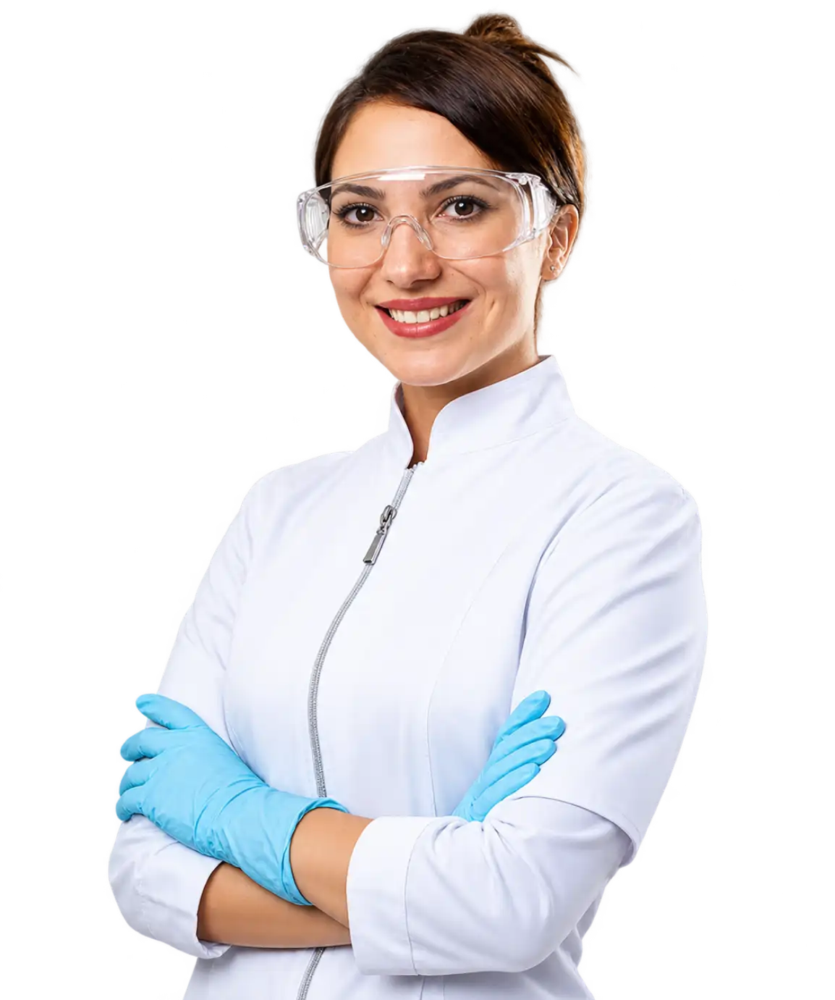
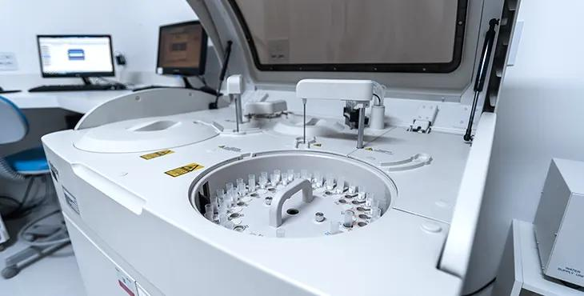

Estamos prontos para cuidar de você
Agendar atendimento
Exames laboratoriais, consultas com clínico geral, exame toxicológico e medicina do trabalho. São mais de 800 exames, com atendimento humanizado para você e sua família.

Mais de 800 exames laboratoriais para apoiar o cuidado com a sua saúde, com orientação da equipe sobre preparo e coleta.
Hemograma, glicemia, colesterol, exames hormonais, imunologia e muito mais.
Atendimento com clínico geral para avaliação de sintomas, acompanhamento e orientação de saúde para você e sua família.
Um cuidado próximo, acolhedor e atento às necessidades de cada pessoa.
Conheça a página de Clínica MédicaMedicina do trabalho, exames admissionais e ocupacionais e exame toxicológico para trabalhadores e empresas.
Consulte a equipe para saber quais serviços e preparos se aplicam ao seu atendimento.


Hemograma completo, glicemia, colesterol total e frações, triglicerídeos, creatinina, ureia, TGO, TGP e outros exames. Consulte disponibilidade e preparo com a equipe.
Ver catálogo de examesDosagens hormonais completas incluindo TSH, T4 livre, cortisol, insulina, testosterona, estradiol e outros, com resultados precisos e laudos ágeis.
Exames imunológicos com alta sensibilidade: sorologias, anticorpos, autoimunidade e testes alérgicos. Diagnósticos assertivos e confiáveis.
Rastreamento e acompanhamento oncológico com PSA, CA 125, CA 19-9, CEA, alfafetoproteína e outros. Suporte preciso ao diagnóstico clínico.
Atendimento médico especializado com foco no seu bem-estar. Profissionais qualificados em clínico geral e diversas especialidades com diagnóstico preciso e tratamento humanizado.
Saiba maisExame toxicológico ocupacional em Nova Granada. Para uso na CNH, confirme com a equipe disponibilidade, credenciamento ou vínculo com laboratório habilitado e registro do laudo antes da coleta.
Saiba maisAnálises bioquímicas completas: perfil lipídico, função renal e hepática, glicemia, HbA1c, eletrólitos e muito mais para avaliação completa da saúde.
Exame de urina tipo I, urocultura, parasitológico de fezes e outros exames do sistema urinário e digestivo com análise minuciosa e precisa.
Sexagem fetal a partir de 8 semanas de gestação e teste de paternidade com total sigilo, precisão e segurança para sua família.
Saiba maisExames ocupacionais completos para sua empresa, incluindo admissionais, periódicos e demissionais. Emitimos ASO com rapidez e total conformidade com as normas regulamentadoras (NR-7).
Saiba maisExames admissionais para contratação de funcionários com emissão de ASO (Atestado de Saúde Ocupacional) ágil e seguro, garantindo a regularidade trabalhista da sua empresa.
Saiba maisA confiança de quem já conhece nosso trabalho é o nosso maior reconhecimento.
"Excelente laboratório! Atendimento rápido, equipe muito educada e preço justo. Faço meus exames sempre aqui."
"Fiz o exame toxicológico para renovar a CNH. Resultado rápido, funcionários muito atenciosos. Recomendo!"
"Ambiente acolhedor e muito limpo. Profissionais competentes e atendimento humanizado. Minha família toda faz exames aqui."
"Ótimo laboratório em Nova Granada. Estrutura moderna, resultado online e equipe muito prestativa. Nota 1000!"
"Sempre fui muito bem atendida. O laboratório é limpo, organizado e os resultados saem rápido. Super confio!"
"Melhor laboratório da região! Equipe qualificada, preço acessível e atendimento com muito carinho. Recomendo de olhos fechados!"
"Localização ótima na Av. Osterno Franco, ambiente acessível e confortável. Fiz consulta médica também, muito bom!"
"Exame admissional feito com rapidez e profissionalismo. Emissão do ASO na hora. Empresa recomenda!"
"Atendimento nota 10! Desde a recepção até a coleta, todos muito gentis e cuidadosos. Ambiente inclusivo e acolhedor."
"Fiz o hemograma e exames hormonais. Tudo perfeito! A equipe explica tudo com calma e paciência. Super indico!"
"Laboratório confiável e com ótima estrutura. Preço acessível e resultados rápidos. O melhor custo-benefício de Nova Granada!"
"Ótima clínica médica! Profissionais atenciosos e diagnóstico preciso. Faço acompanhamento aqui e só tenho elogios."
"Resultados de exames online facilitam muito a vida! Atendimento humanizado, equipe nota mil. Orgulho de Nova Granada!"
"Fui muito bem recebida, ambiente limpo e agradável. Coleta de sangue super tranquila, quase não senti nada. Recomendo!"
"Exames admissionais para minha empresa sempre ágeis e com toda documentação em ordem. Parceiro de confiança!"
"Excelente laboratório! Atendimento rápido, equipe muito educada e preço justo. Faço meus exames sempre aqui."
"Fiz o exame toxicológico para renovar a CNH. Resultado rápido, funcionários muito atenciosos. Recomendo!"
"Ambiente acolhedor e muito limpo. Profissionais competentes e atendimento humanizado. Minha família toda faz exames aqui."
"Ótimo laboratório em Nova Granada. Estrutura moderna, resultado online e equipe muito prestativa. Nota 1000!"
"Sempre fui muito bem atendida. O laboratório é limpo, organizado e os resultados saem rápido. Super confio!"
"Melhor laboratório da região! Equipe qualificada, preço acessível e atendimento com muito carinho. Recomendo de olhos fechados!"
"Localização ótima na Av. Osterno Franco, ambiente acessível e confortável. Fiz consulta médica também, muito bom!"
"Exame admissional feito com rapidez e profissionalismo. Emissão do ASO na hora. Empresa recomenda!"
"Atendimento nota 10! Desde a recepção até a coleta, todos muito gentis e cuidadosos. Ambiente inclusivo e acolhedor."
"Fiz o hemograma e exames hormonais. Tudo perfeito! A equipe explica tudo com calma e paciência. Super indico!"
"Laboratório confiável e com ótima estrutura. Preço acessível e resultados rápidos. O melhor custo-benefício de Nova Granada!"
"Ótima clínica médica! Profissionais atenciosos e diagnóstico preciso. Faço acompanhamento aqui e só tenho elogios."
"Resultados de exames online facilitam muito a vida! Atendimento humanizado, equipe nota mil. Orgulho de Nova Granada!"
"Fui muito bem recebida, ambiente limpo e agradável. Coleta de sangue super tranquila, quase não senti nada. Recomendo!"
"Exames admissionais para minha empresa sempre ágeis e com toda documentação em ordem. Parceiro de confiança!"
Resultados obtidos com alta precisão graças aos equipamentos mais modernos e tecnológicos.
Exame toxicológico ocupacional com orientação da equipe em cada etapa.
Confirme com a equipe a disponibilidade e a finalidade do exame para sua categoria.
Para habilitação ou renovação, consulte os requisitos e o registro do laudo antes de agendar.
Fale com a equipe para verificar o atendimento adequado à sua necessidade.
Agendar pelo WhatsAppComprometidos com a sua saúde, oferecemos qualidade, agilidade e um atendimento verdadeiramente humano.
Processos rigorosos de controle interno e externo para garantir a precisão e confiabilidade dos seus resultados.
Equipamentos de última geração para análises precisas e resultados rápidos, com máxima segurança diagnóstica.
Biomédicos, farmacêuticos, técnicos de laboratório e enfermagem altamente capacitados ao seu serviço.
Cada paciente é único. Nosso foco é o cuidado personalizado, com respeito, empatia e atenção em cada detalhe.
Saúde de qualidade deve ser acessível a todos. Atendemos particular e convênios com preços justos e transparentes.
Fácil acesso em Nova Granada - SP, com estacionamento, acessibilidade para cadeirantes e ambiente acolhedor.
Trabalhamos com os principais planos de saúde e convênios médicos, além de atendimento particular com preço acessível para toda a família.
Atendimento particular com preços acessíveis e transparentes para você e sua família.
Consultar valoresTrabalhamos com os principais planos de saúde. Nossa equipe confirma a aceitação antes do atendimento.
Verificar convênioEntre em contato pelo WhatsApp (17) 3262-0705 ou pelo telefone fixo (17) 3262-0707 para verificar se seu convênio é aceito.
Entre em contato com o Cruz de Prata Laboratório e Clínica Médica. Somos a solução completa em saúde para você e sua família em Nova Granada - SP.
Tire suas dúvidas sobre os nossos serviços, horários e atendimento.
Realizamos mais de 800 tipos de exames laboratoriais, incluindo hemograma completo, glicemia em jejum, colesterol total e frações, triglicerídeos, TSH, T4 livre, ácido úrico, creatinina, ureia, TGO, TGP, exames hormonais, imunologia, sorologias, marcadores tumorais, exame toxicológico, bioquímica, urinálise e muito mais.
Não é obrigatório agendamento para a maioria dos exames de rotina. Porém, para garantir seu atendimento prioritário e reduzir o tempo de espera, recomendamos entrar em contato pelo telefone (17) 3262-0707 antes de vir ao laboratório.
Funcionamos de segunda a sexta-feira das 06:30 às 17:00 e aos sábados das 07:00 às 11:00. Domingos e feriados: fechado.
Os resultados podem ser retirados presencialmente no laboratório no endereço da Av. Osterno Nogueira Franco, 890. Para verificar a disponibilidade de resultado online, entre em contato pelo telefone (17) 3262-0707 e nossa equipe irá orientar você.
Sim, trabalhamos com os principais planos de saúde e convênios médicos, além de atendimento particular com preços acessíveis. Entre em contato pelo (17) 3262-0707 para verificar se seu convênio é aceito.
A Cruz de Prata informa atendimento para exame toxicológico ocupacional em Nova Granada. Para uso na CNH, habilitação ou renovação, confirme antes com a equipe se o exame está disponível para sua finalidade e categoria, se a coleta será vinculada a laboratório credenciado pela Senatran e como o laudo será registrado. WhatsApp: (17) 3262-0705.
Sim! O Cruz de Prata Laboratório possui entrada acessível para pessoas em cadeiras de rodas, garantindo atendimento a todos os pacientes com conforto, segurança e dignidade.
Veja o que pode ser avaliado em consulta e entenda a orientação sobre PSA e próstata.
Ler artigo
Entenda o preparo e saiba por que a orientação pode variar conforme o exame.
Ler artigo
Saiba como a consulta pode orientar a prevenção, a investigação de sintomas e os próximos passos.
Ler artigoVenha nos visitar! Estamos prontos para atender você e toda a sua família.